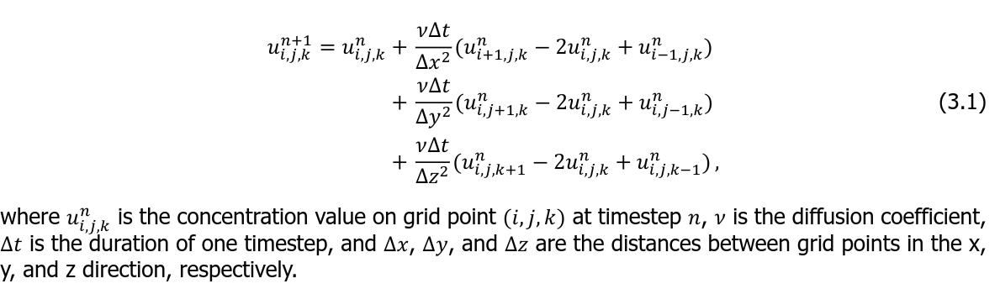
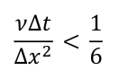

Diffusion
One of BioDynaMo's built-in biological processes is extracellular diffusion. It is the process of extracellular substances diffusing through space. The constants that govern the diffusion process can be set by the user. Let's go through an example where diffusion plays a role.
Copy the demo code
diffusion is one of many installed demos in BioDynaMo. It can be copied out
with biodynamo demo.
biodynamo demo diffusion .
Inspect the code
Go into the diffusion directory and open the source file src/diffusion_biology_modules.h in your favorite editor.
We can note the following things from its content:
1. Substance list
enum Substances { kKalium };
The extracellular substances that will be used in the simulation are listed in
an enum data structure. In this case it is just a single substance. According to our C++
coding style we will prepend the substance's name with the letter "k".
2. Biology modules
In the same file you can find the definition of the biology modules Chemotaxis
and KaliumSecretion. These are the modules that will govern the
behavior of the simulation objects (i.e. cells).
3. Initial model
Open the src/diffusion.h source file.
First, create a BioDynaMo simulation:
Simulation simulation(argc, argv);
Next up is creating the initial model of our simulation. Therefore, we have to create an initial set of simulation objects and set their attributes:
auto construct = [](const Double3& position) { Cell* cell = new Cell(position); cell->SetDiameter(30); cell->SetMass(1.0); cell->AddBiologyModule(new Chemotaxis()); Double3 secretion_position = {{50, 50, 50}}; if (position == secretion_position) { cell->AddBiologyModule(new KaliumSecretion()); } return cell; }; std::vector<Double3> positions; positions.push_back({0, 0, 0}); positions.push_back({100, 0, 0}); positions.push_back({0, 100, 0}); positions.push_back({0, 0, 100}); positions.push_back({0, 100, 100}); positions.push_back({100, 0, 100}); positions.push_back({100, 100, 0}); positions.push_back({100, 100, 100}); // the cell responsible for secretion positions.push_back({50, 50, 50}); ModelInitializer::CreateCells(positions, construct);
The construct lambda defines the properties of each cell that we create. These can be
physical properties (diameter, mass), but also biological properties and behaviors
(chemotaxis, substance secretion)
In this example, each cell is assigned the Chemotaxis behavior. In diffusion_biology_behaviors.h you can
check the source code of this module. Basically it makes cells move according to the gradient,
caused by a concentration difference of the substance. One of the cells
(the cell at position {50, 50, 50}) will be the one secreting the substance;
it therefore gets assigned the SubstanceSecretion behavior.
Furthermore, we define the initial positions of the cells. In this example it is done explicitly, but one could also generate a grid of cells, or a random distribution of cells.
Simulation Parameters
Create a bdm.toml file in the diffusion directory, and copy the following lines
into it:
[visualization] export = true export_interval = 10 [[visualize_sim_object]] name = "Cell" additional_data_members = [ "diameter_" ] [[visualize_diffusion]] name = "Kalium" gradient = true
This will enable exporting visualization files, so that we can visualize the simulation after it has finished. Furthermore, we enable the output of the diameter of our simulation objects (by default named "Cell"), and the gradient data of the extracellular diffusion
Build and run the simulation
Run the following commands to build and run the simulation.
biodynamo run
Visualize the simulation
Load the generated ParaView state file as described in Section Visualization.
From "View", select "Animation Panel". This will display some animation settings at the bottom of the screen. From the "Mode" select "Real Time". Then click the Play button at the top of the screen to run the simulation visualization.
Diffusion parameter constraints
The differential equations that describe the diffusion are solved in an analytical way using the central difference method as shown in the figure below:

The diffusion coefficient dictates the speed of diffusing a substance through space, while with the decay constant one controls the speed at which a substance decays. Mathematically, the method would allow for unphysical behavior to occur, such as negative concentration values. In order to avoid such behavior from happening, we impose the following constraint on the parameters:

Since as a user, you are giving the resolution of the diffusion grid and not the
distance between the grid points, you can determine this value by dividing the
longest dimension of your space by the resolution, or by calling the corresponding
function DiffusionGrid::GetBoxLength().
For more information on the inner workings of the diffusion module, please refer to: https://repository.tudelft.nl/islandora/object/uuid%3A2fa2203b-ca26-4aa2-9861-1a4352391e09?collection=education